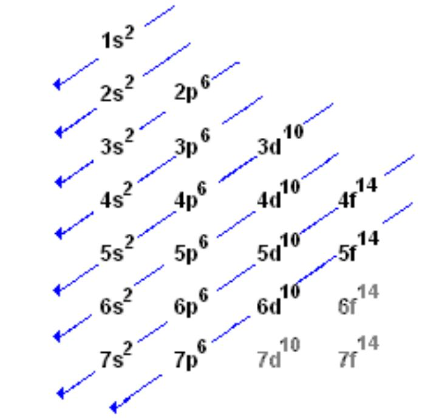
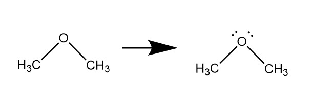
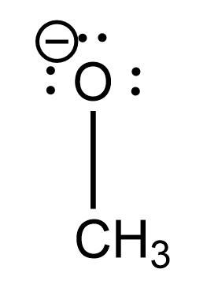
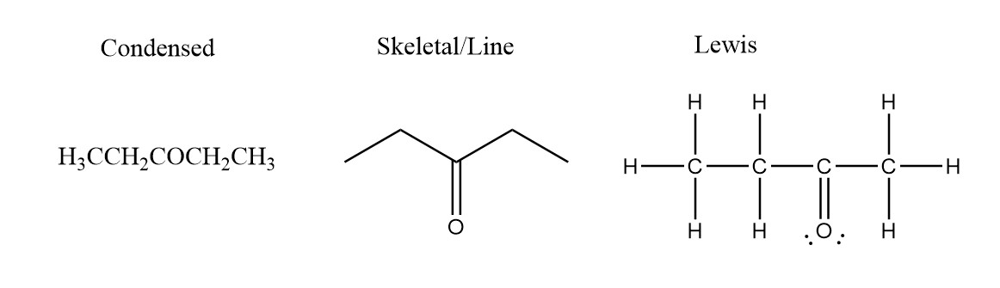
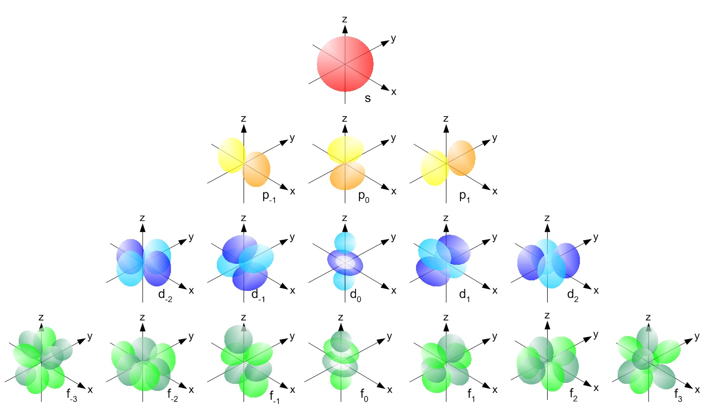
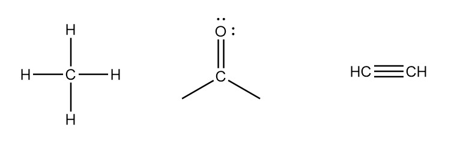
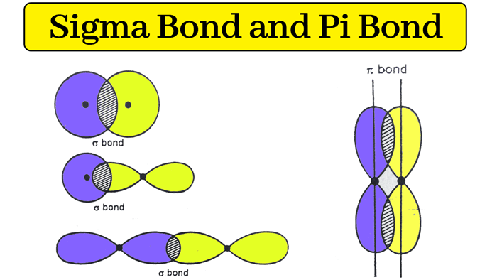
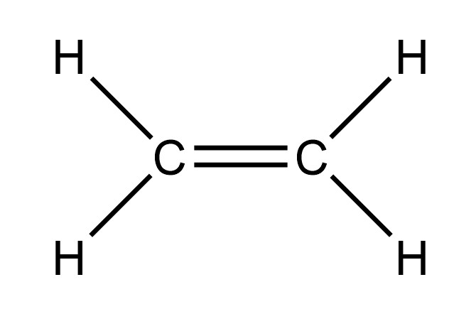
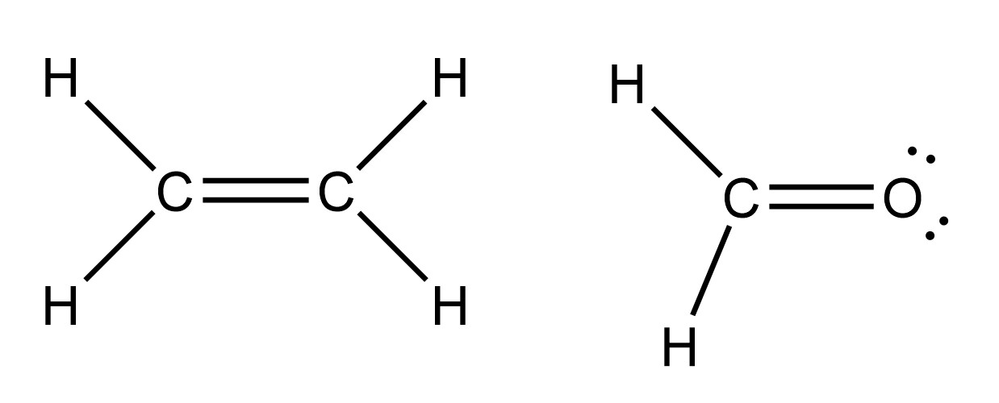
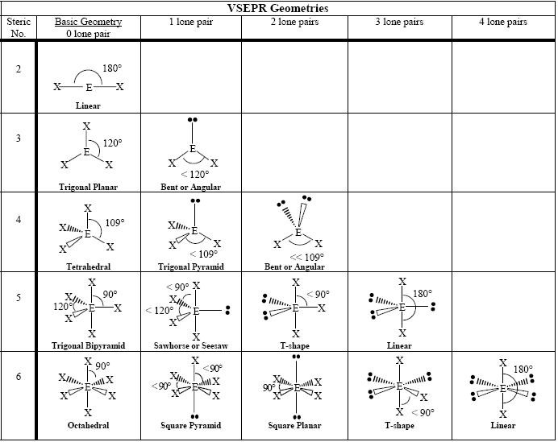

Looking at the periodic table, it may seem as though the position of each atom is "randomly" assorted based on some arbitary criteria. This though, is incorrect, as the elements on the periodic table are assorted based on their atomic number and the corresponding amount of electrons each have in their "orbitals".
Take hydrogen for example, based on the atomic number we can deduce that a "H" atom has 1 proton, 1 electron, and 1 neutron. We know that atoms have nuclei which contain the neutrons and protons of the atom and act as the main "body" of the element. We also learn that electrons revolve around the nucleus of an atom as protons being positively charged, attract the negatively charged electrons. The question then becomes, where are the electrons "exactly"? While no electron follows a set path around an atom, we refer to known paths as electron density domains, meaning the area an electron is most likely to be found, which is typically along some circular path.
Through experimentation methods such as crystallography, researchers were able to determine ranges at which electrons generally travel around a nucleus, which have adopted the letters "s", "p", "d", and "f". The orbitals which electrons shuttle into go in this specific order, with the super script on each orbital corresponding to the number of electrons the orbital can hold. 
Returning to the hydrogen atom, we can see that since it only has one electron, it will exist in the 1s orbital. Since this is hydrogens only and highest order shell, we refer to it as its "valence" shell, representing the electrons that will actively interact with species apart from the original atom. All atoms wish to fill or lose their valence shell, as it will give them an electron number comparable to the Noble Gas closest to the specified atom, in this case it would be Helium for Hydrogen, making the atom highly stable and unreactive. This is the reason that hydrogen only has 1 potential bonding pair between another atom, as an additional bond would create room for a 2s orbital which is energetically unfavored.
Given this, we can apply the same concept to most other atoms in the periodic table, most notably carbon (C), nitrogen (N), and oxygen (O) as these are the most common atoms seen within Organic Chemistry. Carbon's spot on the periodic table demonstrates 1s, 2s, and 2p orbitals, this final "p" orbital being unfilled and only containing 2 electrons. Given concepts previously discussed, to fill this new valence shell, carbon would need 4 more electrons to fill this shell to mimic Neon. To accomplish this, carbon can bond to 4 other atoms and "covalently" share 4 electrons to reach this state. Doing this for oxygen and nitrogen, we can see that oxygen wants to have 2 bonds, and nitrogen with 3.
You may also notice within some depictions of organic compounds, that oxgyen and nitrogen typically have extra electrons along with their bonding. We know why they have the bonds, but why is it necessary to include these "lone pairs"? The reason is known as the Octet Rule, which explains the trend seen on the periodic table. Taking oxygen as an example, we can see in the "2" valence shell that there are 6 electrons in the atoms neutral state, 2 in the 2s orbital and 4 in the 2p orbital. As we discussed before, oxygen likes to have 2 bonds in order to gain access to the 2 electrons it is naturally missing in order to reach a comparable state to Neon.
It also is important to mention the way electrons work within bonds, as when two atoms bond, each share 1 electron each in some capacity, meaning that in a bond we can consider each atom as having "ownership" of 1 of the electrons, but having "access" to 2 as each atom has connection to each other's shared electron.
Given a oxygen structure below, we can see that the 2 bonds between it and the carbon atoms signify 2 electrons each. This means that there are only 4 electrons that the oxygen atom has access to, meaning 4 more electrons signified through lone pairs, need to be added to the oxygen atom to give the oxygen atom the full 8 valence electrons. However, there is no charge applied to the oxygen atom, because the oxygen only owns 6 electrons, 4 from the lone pairs, and 1 from each bond.
Now we must ask, what happens when an atom goes over the amount of electrons it "owns"? Take the structure below which features the methanoate anion. We can apply a -1 charge to the oxygen because there are 6 lone pair electrons and 1 electron in the bond between it and the carbon. Given that a neutral oxygen atom only has 6 valence electrons in its "ownership", the extra electron gives the oxygen a -1 "formal charge" as there is now a -1 charge in comparison to its neutral state.
You may also notice in organic chemistry that there are multiple ways a compound or molecule can be written. Below are the most common examples of each case with their names which can be used as reference when detailing them.
The Condensed Structure is arguably the most common in literature, as it allows someone to express a given compound without writing out its full structure. We also have the ability to count the number and types of atoms the fastest in this expression of a compound in comparison to others.
The Skeletal Structure is the most common interpretation within organic chemistry, as it is often the quickest to write out and allows for better visualization of atomic bonding as it can include stereochemistry, a topic discussed later. You may notice that there aren't any carbon or hydrogen atoms explicity drawn out. You don't need to in a structure like this because each "node" is acting as a carbon, and based on the number of bonds the node visually has, corresponds to the number of hydrogen. Take the carbon node furtherest to the left, there is only one bond stretching from this carbon towards another node. We understand that carbon likes to have 4 bonds, and since it only has 1 explicity drawn, we can infer that the node on the left, or this carbon atom has 3 hydrogen atoms connected to it.
Finally, the Lewis Structure is the best visual for writing lone pairs and bond interactions. It essentially acts as a more completed version of the Skeletal Structure, as it actually includes the carbons and hydrogens. It is also customary to add lone pairs to each atom that needs them when drawing one.
We know that there are s, p, d and f orbitals, but what exactly are they? As mentioned before, orbitals are regions which we expect to find electrons, but as indicated by their different letters, these orbitals have differing shapes. In most contects, the only orbitals practice in a general organic chemistry course are going to be the s and p orbitals, as elements further down the periodic table are rarely considered in terms of their bonding nature. Despite this, understanding the orbitals gives a better understanding \ as to the "pi" and "sigma" bonds discussed later. Below is an image that shows the general shapes of each domain within a given orbital. "s" is the most simplistic, as it is a sphere that goes partially in all directions. "p" adds an extra layer as there are two opposing smaller loops that go in a positive and negative direction of one of the xyz axes. For our purposes, the other orbitals won't be described as their complexity isn't practically applied to bonding natures, but the visual of them can give a better idea of how a bond could form.
The nature of electrons conditions them to select for the least filled domain in a given orbital, with each domain capable of holding 2 electrons. This doesn't matter for the s orbital as there is only 1 domain so both electrons will primarily exist within this outlined sphere. Given that there are three separate domains for a p-orbital, electrons will fill into the one with the lowest amount of electrons with each being able to hold 2 electrons for a total of 6 electrons in the orbital. Say there is an electron that exists in the px-domain, if another electron is added or shared, it will exist in either the py or pz-domains as the electron in the px orbital repulses the electron away.
The question then becomes, what happens when an atom has both a "s" and "p" orbital? As you could expect, the orbital domains will distort themselves based on the influence of the nucleus of each. This is what we refer to as "hybridization", as a combined s-domain and a px-domain can make a unique domain. We know that each each domain can have 2 electrons, that we start with the s-orbital, and that each bond in a given molecule has 2 electrons, meaning that based off of the bonding nature of an atom, we should be able to determine the atoms hybridized orbital. Take the image below, the methane on the left shows a carbon atom in the middle of 4 hydrogens with a bond to each. Given the previous afirmations, we can say that this carbon atom is sp3 hybridized, as 1 bond is the "s", the 2nd is the "p", the 3rd is another "p", and the 4th is yet another "p" domain. Looking at the second species, we figure out that each bond doesn't mean a different domain is created, as in the case of a double bond, we don't consider it a "sp" hybridized orbital, but rather just an s-orbital. This is because there isn't two atoms contributing to each of the bonds, but only 1. This causes there to be no second orbital hybridization created as these two other electrons will be found within a pi bond. As such, this carbon must be sp2 hyridized. For the oxygen, each lone pair of electrons add a stage of hyrbidization, so the oxygen will also be sp2 hybridized. Like with the double bond, a triple bond is also only one stage of hybridization for a given atom as the 2 extra bonds create 2 pi bonds. Given this, both carbons are sp hybridized.
A pi bond is the creation of a second or third bond via electrons in one of the p-domains creating a bond over the first bond established. Below illustrates a image of a basic bond and a connection with an added pi bond. As you can see, if a p-domain/s-domain connect with another p-domain or s-domain, the space for another orbital is taken up along that axis. However, since p-domains only go straight in one direction, the only way another p-domain can bond with a p-domain is by overlapping sideways to form what we know as a pi bond. On the other hand, the bond that faces equitorially is called a sigma bond. For this reason, when we look at the structure to the right, we can say that 1 of the bonds is a sigma bond and is created by a Csp2-Csp2 orbital overlap as denoted by the hybridization of each carbon atom, while the pi bond, since it can only form with a vertical p-orbital overlap, consists of just a C2p-C2p atom domain conjunction.
 As we know from the nature of an atom's nucleus, some draw in electrons more than others, corresponding to a stronger net force. If we take the bonding of the two molecules below, each of them have 1 pi and 1 sigma bond, yet combined bonds between the oxygen and carbon requires 176-179 kcal/mol while those of the carbon-carbon are approximately 146 kcal/mol. Given that the bonds themselves share the same amount of electrons, why does this happen? This results in a stronger bond as the oxygen is much harder to remove than a carbon. Additionally, the bond length will be shorter, as the carbon atom connected to the oxygen must remain closer to it than to another carbon as the oxygen is pulling the electrons farther outside of the nucleus' range if it doesn't move closer.
As we can anticipate, a single bond is going to be weaker, and thus have a longer bond length than a double and triple bond. The higher amount of electrons being shared between both atoms make it so more energy is required to separate them, and the strong bond results in the nuclei being pulled towards each other with a greater degree.
The "valence shell electron pair repulsion" Theory is simply the idea of predicting a molecules geometrical structure in space dependent on its given bonds and lone pairs. Below is a table that shows all relevant geometries. As we can see, we notice that the bond angles between two given atoms differ based on whether they are near other bonds and lone pairs. Lone pairs have a higher repulsive nature than regular bonds because the nature of bonds inately limits the sphere of influence that a electron can have as it has the effects of two atoms contraining it versus just one. The other central idea behind this Theory is that atoms want to stay as far away from other groups as possible. This should make sense, because if two atoms aren't trading or sharing electrons, then the like-negativity of the electrons should push each other away with a stronger force than which the protons can attract, and if close enough.
The geometries of each general category should then make sense using this logic, such as the linear case in a 3 atom complex, as both nuclei default to staying at the furthest position away from each other as a result of electron-domain repulsion. To note within the image is the general bond angles created between each atom. While each respective bonding group will have varying and unique distancing based on their number of electrons and protons, most hover between a range of:
The prefix "Intra-" refers to bonds between two given atoms that physically connect them together.
a
Mechanisms for both Organic Chemistry 1 and 2 can be found Here.